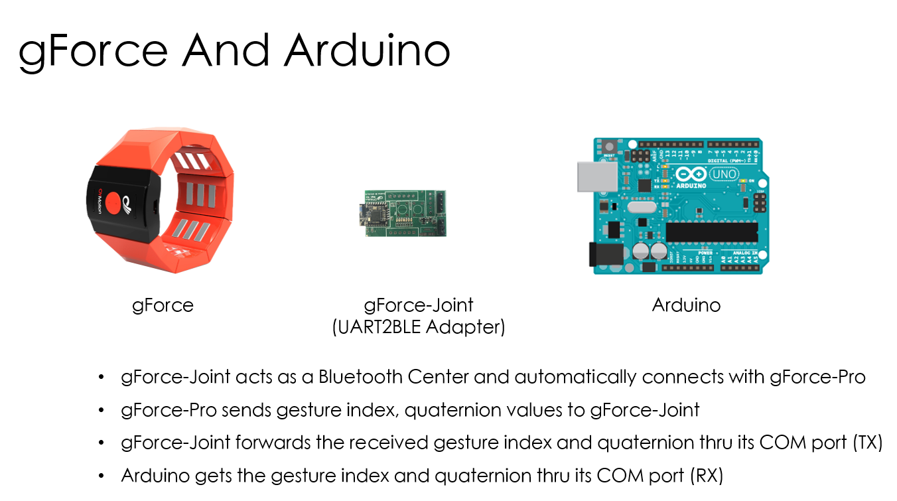
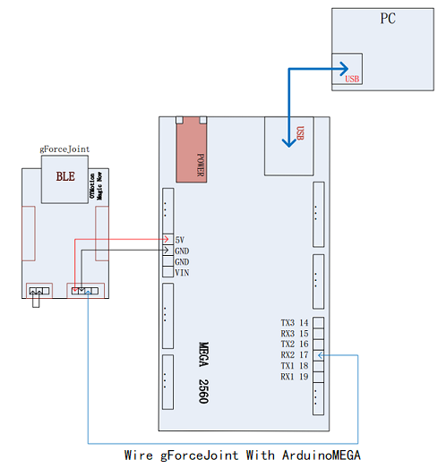

gForce Joint
Brief
This document tries to guiding how one can use gForce gesture armband with Arduino. Before continuing, please make sure you have sufficient experience with Arduino, and ArduinoIDE was installed on your PC.
gForce Joint Usage
This chapter guides the steps to connect gForce Joint to Arm band. The following names are being used: gForceJoint, gForce, gForceSDKArduino, ArduinoMEGA

Step 1: Import gForceSDKArduino
Step 2: Test communication between gForceJoint and ArduinoMEGA

- Wire gForceJoint with ArduinoMEGA: in this demo case, gForceJoint is connected to MEGA’s Serial Port #2 (gForceJoint (TX) => MEGA (RX2))
- Open gForceJointTest in ArduinoIDE. Compile and upload to ArduinoMEGA.
- Open the Serial Port Monitor from ArduinoIDE.
- Set the serial port monitor with a baud rate of 115200bps.
- Pair and connect gForce armband to gForceJoint, perform the gestures that’s defined, check if the information printed out in the Serial Port Monitor is correct, and hence make sure the connect between gForceJoint and MEGA works.
Q&A
How to wear gForce armband?
If a gForce-100 is used, users should follow wearing instruction and gesture strictly.
How to connect gForce with gForceJoint wirelessly?
- Turn on gForce armband, the green led should flash slowly
- Make sure gForceJoint is powered on
- Put gForce armband close to gForceJoint such as within 10 cm of distance.
- gForce armband will automatically connect to gForceJoint. The green led should flash much faster.
- If not, make sure gForceJoint is not connected to other gForce armband. Only one armband is allowed. And, make sure, power is on.
Note: One should make sure gForceJoint works with ArduinoMEGA before continuing. Possible mistakes are:
- Wiring mistakes between gForceJoint and ArduinoMEAG
- gForce doesn’t connect with gForceJoint because distance. When connecting, gForce armband and gForceJoint HAVE to be within a short distance as close as possible such as 10 cm.
- User doesn’t follow armband wearing and gestures.